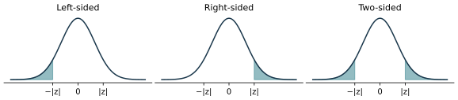
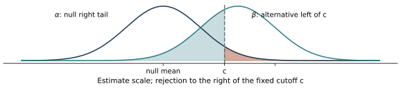
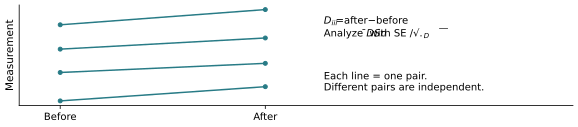
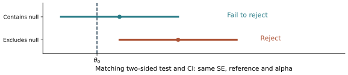

Chapter 8: Hypothesis Testing
The notes retain the original introduction, Friday questions and solutions, followed by the completed chapter. The slide PDF has 90 pages; repeated reveals count as separate PDF pages.
Alpha, beta and power review
Main review: short exam cram · 2 pages
Detailed review: explanations and worked examples · 10 pages
Practice and worked solutions
Choose a topic below to move between the notes and slides. Page numbers refer to the PDF viewer. Page links work in supporting viewers; some mobile or embedded viewers open at page 1. If that happens, enter the page number shown here. The slides have a linked navigation strip above the original page; their content and page order are unchanged.
November 5 revision: notation follows the course slides; figures connect the equations to their meaning. Notes retain their existing page numbers. On a small screen, swipe a wide figure or open its full-size view.
Hypotheses, null distributions and p-values

Friday practice and solutions
Practice is additional course material. Related slides: GPA, pp. 20–30; one proportion, pp. 66–67; critical values, pp. 31–33.
Significance, critical values and rejection regions
Carpenter example: test, errors and power
Power and study design

Two independent population means
Paired designs

One proportion and the chip example
Fitness example and power curves
Two proportions and the heart-disease example
Method selection and checks
Notes p. 31 is an additional Poisson-model connection, not a slide-deck example. The review draws across the chapter.
